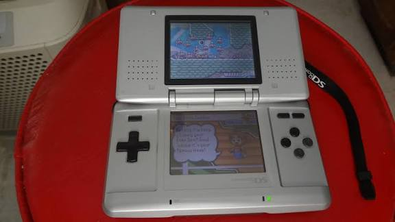

When Nintendo announced the Nintendo DS (Dual Screen) in 2004, many competitors laughed at its unusual dual-screen clamshell design. However, the console went on to dominate the market, selling an astonishing 154 million units!
Its standout feature was the lower touchscreen operated via stylus or finger, as well as a built-in microphone. Game developers were given unmatched creative freedom: the lower screen displayed maps, inventories, or puzzles, while the main action unfolded on the upper screen.
The Nintendo DS proved that raw computing power isn't everything. Unique gameplay in titles like Nintendogs, The Legend of Zelda: Phantom Hourglass, and Pokémon made it the second best-selling video game console in human history.
<-- Return to Main Page